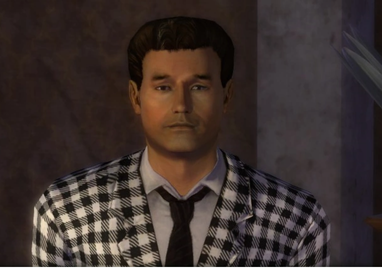

Matthew Perry alustas näitlemisega 10-aastaselt, 1979. aastal, vahetult peale Los Angelesi kolimist. Varasemates rollides kehastas ta lapsi erinevates seriaalides ja filmides.
Esinedes sitcomis 'LAX 2194', mis põrus, kutsuti näitleja 'Sõprade' pilootepisoodi kehastama tema kõige tuntumat rolli 'Chandler Bingina'. Pärast läbimurdelist rolli, kehastas ta 1990ndatest 2000ndate alguseni erinevaid rolle erinevates filmides.
2000ndatel osales Perry mitmetes filmides ja seriaalides ning võitis ka erinevaid auhindu, näiteks Kuldse Gloobuse ja Emmy TNT filmi eest "The Ron Clark Story". Teised kuulsamad rollid sellest east on filmides "17 Again","Mr.Sunshine" ja videomängus "Fallout: New Vegas". Teadaolevalt viimaseks rolliks jäi tal eriepisood 'Sõpradest', kuigi ta pidi kehastama rolli ka filmis 'Don't Look Up'.
Matthew Perry kehastus videomängus Fallout: New Vegas